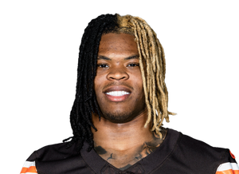

BALL KEEP
40 boards · Superflex · PPR · Sleeper
Player File · RB CLE

Quinshon Judkins
RB · CLE · 22 · Ohio State
2026 · through Week 7
Counting stats
Yearly
| Year | G | Snap % | Touches | Tgt | Rec | Yds | TD | Rush | RuYd | ReYd | PPR |
|---|---|---|---|---|---|---|---|---|---|---|---|
| 2026 | 5 | 59.8% | 91 | 20 | 18 | 323 | 1 | 73 | 221 | 102 | 56.3 |
| 2025 | 15 | 50.1% | 256 | 36 | 26 | 998 | 7 | 230 | 827 | 171 | 169.8 |
Game by game · 2026
| Wk | Opp | Snap % | Touches | Tgt | Rec | Yds | TD | Rush | RuYd | ReYd | PPR |
|---|---|---|---|---|---|---|---|---|---|---|---|
| 1 | @ JAX | 64.7% | 14 | 2 | 2 | 50 | 0 | 12 | 33 | 17 | 7.0 |
| 2 | @ TB | 67.2% | 17 | 5 | 5 | 48 | 0 | 12 | 21 | 27 | 9.8 |
| 3 | vs CAR | 51.4% | 20 | 2 | 2 | 79 | 0 | 18 | 70 | 9 | 9.9 |
| 4 | vs PIT | 65.6% | 23 | 7 | 6 | 96 | 1 | 17 | 53 | 43 | 21.6 |
| 5 | @ NYJ | 52.9% | 17 | 4 | 3 | 50 | 0 | 14 | 44 | 6 | 8.0 |
| 6 | vs BAL | - | - | - | - | - | - | - | - | - | - |
| 7 | @ TEN | - | 18 | 1 | 1 | 104 | 2 | 17 | 96 | 8 | 23.4 |
| Total | 59.8% | 109 | 21 | 19 | 427 | 3 | 90 | 317 | 110 | 79.7 |
Regular-season line from Sleeper. Touches are carries plus catches. Yards are rushing plus receiving. Snap % is offensive snaps divided by team offensive snaps.
The tape
Quinshon Judkins sits at the last slot on The Keep's top 50, which is a feature, not a burial. Two long boards, average 49. The 2025 Browns touchdown clip is a player finishing a drive, which is what you need to see from a young back on a messy team. Redraft has him in the 40s - a RB3/4 with a pulse.
Cleveland will keep being a hard place to trust skill players week to week. That is already in the rank. What The Keep is saying is that among the names we could have put 50th, Judkins has the youth and the rushing profile to still be here in 2028.
Plus
- Keep #50 - 2025 Browns back with enough tape to be a dynasty dart that already 'made' a top-50.
- Youth at RB on a team that will run if it can; redraft still has him in the 40s.
Minus
- Browns offense can be a void; RB50 on The Keep is the edge of 'real' vs 'hope.'
- Committee and Cleveland quarterback play are the weekly minus.
- Cold #7: Walking boot after the Jets. Baltimore visits. McLaughlin is on the wire. Sell the starter tag if a manager still wants the Thursday chapter. - Yahoo Sports, FantasyPros
Board graph
Spread 42-73 · 35 sources
Every Board
Spread 42-73 · 35 sources
| Source | Rank |
|---|---|
| PFN (Katz/Soppe) | 42 |
| Mike Clay (ESPN) | 44 |
| Dynasty Nerds | 47 |
| CBS Sports | 49 |
| Fantasy Alarm | 49 |
| RotoGrinders Superflex | 49 |
| Fantasy Footballers | 52 |
| Establish The Run | 52 |
| numberFire | 52 |
| PlayerProfiler | 52 |
| Rebuild board | 52 |
| RotoBaller Dynasty | 52 |
| The Athletic | 57 |
| Yahoo Fantasy | 57 |
| Rotoworld | 57 |
| Sleeper Superflex | 57 |
| Underdog ADP | 57 |
| 4for4 | 57 |
| FFToday | 57 |
| Contender board | 57 |
| DLF ADP mix | 57 |
| Sports Illustrated Dynasty | 57 |
| FantasyData Superflex | 57 |
| Pro Football Reference | 57 |
| Footballguys | 59 |
| DLF Superflex | 60 |
| Fantasy Life | 60 |
| WalterFootball | 60 |
| Fantasy Points Superflex | 60 |
| Superflex market mash | 60 |
| PFF Dynasty | 62 |
| Dynasty Trade Calculator | 62 |
| ESPN (Karabell) | 67 |
| KeepTradeCut SF | 68 |
| FantasyPros ECR | 73 |
Tape · 2025 season
Browns' excellent punt return leads to Judkins' TD
BK News
- Is Jeremiyah Love Playing Today? (Injury Update, Betting Impact for Broncos vs. Cardinals in NFL Week 7)
- Ravens downgrade Lamar Jackson to 'out' for Week 7 showdown with Bengals; QB will miss third straight game
- Week 7 Fantasy Football Injury Report: The Latest Updates On Breece Hall, Puka Nacua, And All The Top Stars
All player pages · The Keep · The Board · Recent deals · Hot 'n' Cold · BK News · Trade calculator